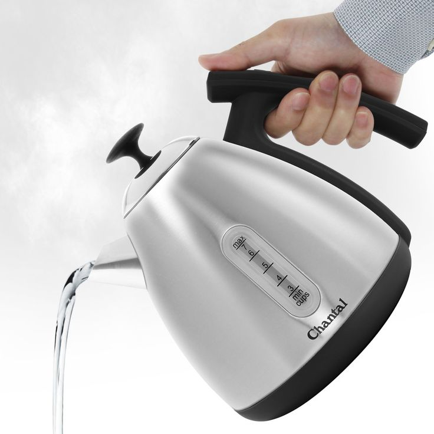

We refurbish electrical kettles and sell them at prices every family in Maseru can afford. All kettles are tested and come with a 3-month warranty.
Shop Now
We don't just clean kettles and sell them. We do a proper refurbishment — replacing parts, descaling, and running full safety tests before any kettle goes on sale.
Our refurbishment walkthrough video